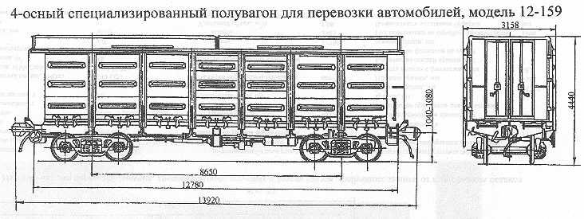

Назначение: для перевозки автомобилей
Параметры
| Номер проекта | 159.00.00 |
| Технические условия | ТУ3182-013-075.18941-95 |
| Модель вагона | 12-159 |
| Тип вагона | |
| Изготовитель | ГПО "Уралвагонзавод" |
| Грузоподъемность, т | 64 |
| Масса тары вагона, т | 29 |
| Нагрузка: статическая осевая, кН(тс) |
230,3(23,5) |
| погонная, кН/м(тс/м) | 66,19(75) |
| Скорость конструкционная, км/ч | 120 |
| Габарит | 1-ВМ(0-Т) |
| База вагона, мм | 8650 |
| Длина, мм: по осям сцепления автосцепок |
13920 |
| по концевым балкам рамы | 12780 |
| Ширина максимальная, мм | 3158 |
| Высота от уровня верха головок рельсов, мм: максимальная |
4440 |
| до пола | 1360 |
| Количество осей, шт. | 4 |
| Модель 2-осной тележки | 18-100 |
| Наличие переходной площадки | нет |
| Ширина дверного проема, мм | 2410 |
| Высота дверного проема, мм | 2907 |
| Внутренние размеры кузова, мм: ширина в свету |
2900 |
| длина в свету | 12606 |
| высота кузова внутри по боковой стене | 2907 |
| Наличие крыши | приварная |
| Наличие съемных переездных мостиков | есть |
| Количество автомобилей перевозимых в
полувагоне, шт.: РАФ |
2 |
| УАЗ | 2 |
| "Волга" | 2 |
| ГАЗ-3302 | 2 |
| ГАЗ-33022 | 2 |
| Год постановки на серийное производство | 1995 |
| Возможность установки буферов | нет |